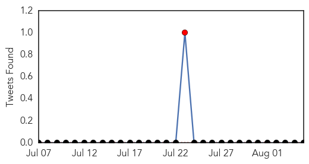

Hepatitis
30-Day Web Trend
4 alerts, 7 warnings

30-Day Twitter Trend
1 alerts, 0 warnings

Article Locations

Article Confidences

Top Articles:
-
No articles found for Aug 05, 2015
Top Tweets:
-
No tweets found for Aug 05, 2015
Dengue Fever
30-Day Web Trend
0 alerts, 0 warnings
30-Day Twitter Trend
0 alerts, 0 warnings

Article Locations
Article Confidences

Top Articles:
- 0.964
- Residents urged to take precautions against mosquitoes
- 0.922
- J’cans urged not to relax against mosquito
- 0.915
- Jamaicans Urged Not To Relax Against the Mosquito
- 0.884
- Manipuri girl first suspected dengue death victim in Delhi
- 0.770
- Dengue cases rise in Kharadi, PMC says no reason to panic
- 0.694
- BJP Gujarat MLA Raja Patel dies suffering from dengue in Mumbai
- 0.518
- Township hospitals face chronic shortages of medicine stocks
- 0.510
- Surat MLA with dengue airlifted to Mumbai, dies
Top Tweets:
-
No tweets found for Aug 05, 2015